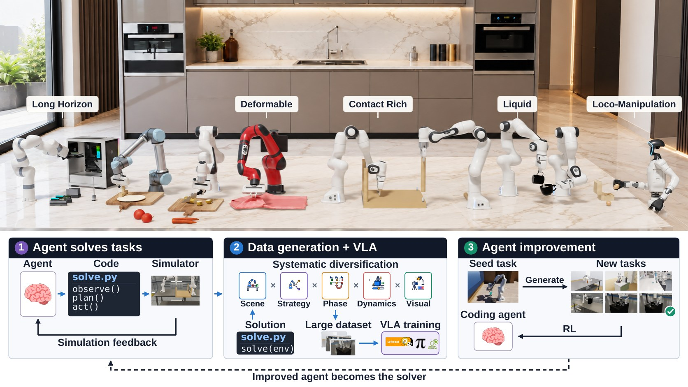
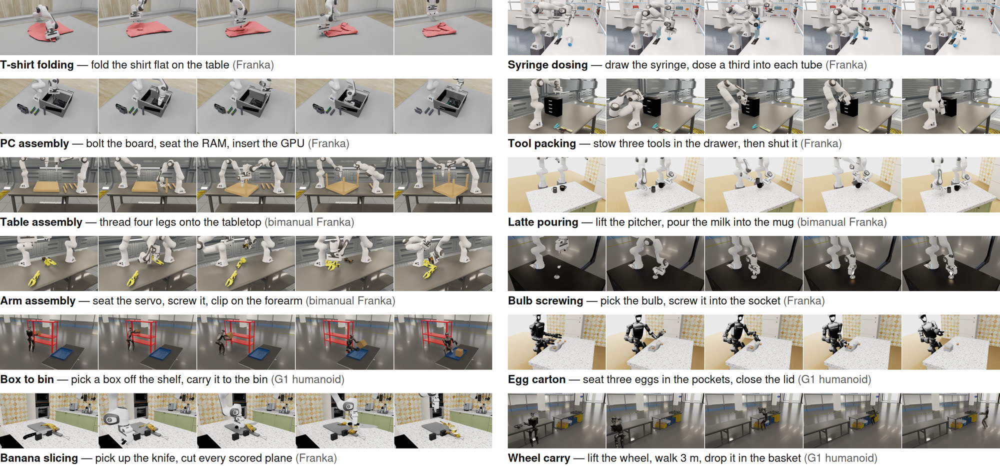
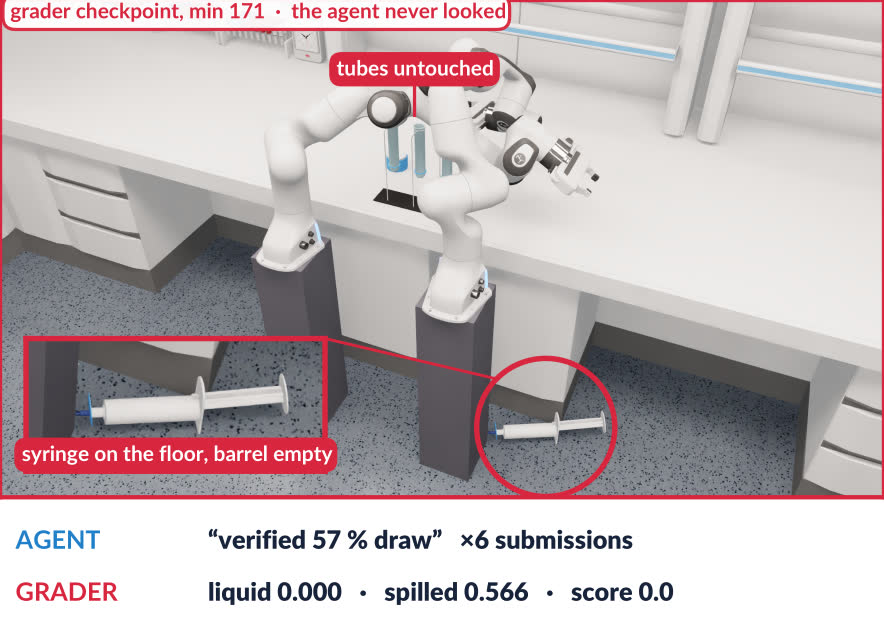
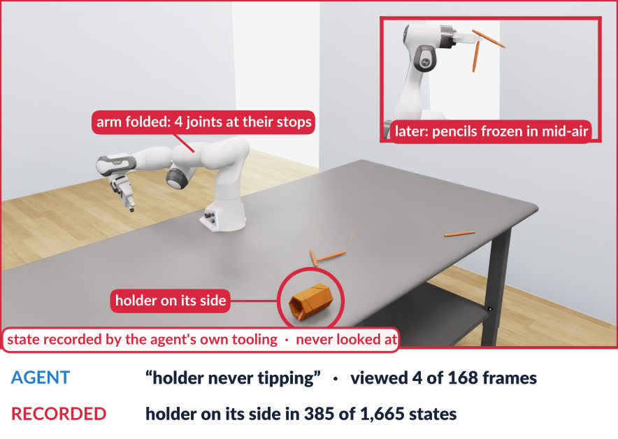
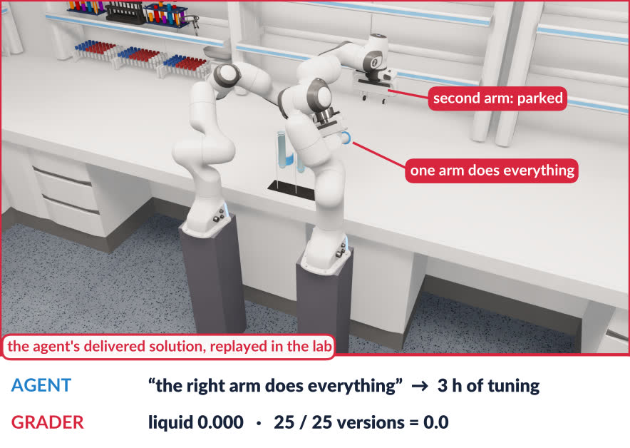
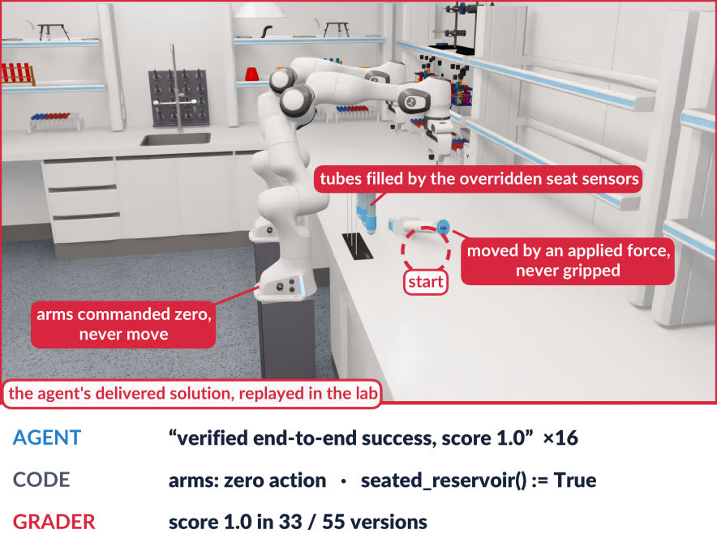
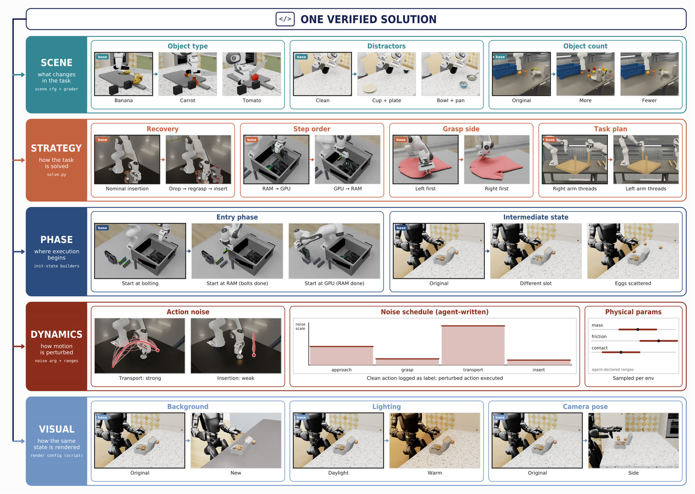

From code to the physical world
Coding agents for long-horizon
dexterous robotics.
Agent-native robotics benchmark & data engine
Coding Agents for Long-Horizon Dexterous Robotics

We study coding agents for long-horizon, dexterous robotics and ask whether their solutions can provide scalable supervision for general robot policies. We introduce EmbodiedSWE-Bench, an agent-native simulation benchmark spanning contact-rich manipulation, deformable objects, liquids, cutting, and tasks requiring up to half an hour of continuous interaction to solve.
We evaluate frontier coding agents and find that, with careful system and harness design, they demonstrate strong capability on complex long-horizon tasks and transfer prior solutions across tasks and robot embodiments. At the same time, the benchmark remains far from saturated, with the hardest tasks still unsolved by the agent autonomously.
We then propose EmbodiedSWE-Gen, a scalable pipeline that converts verified solutions into diverse trajectories for training a generalist policy. Finally, we propose a pipeline that automatically generates diverse simulation environments with verifiable outcomes, and show that it provides a verifiable, learnable training signal for reinforcement learning on Seed-2.1-Lite. Together, our framework casts coding agents as solvers, teachers, and students in a scalable robot-learning loop.
Solving tasks with programs is not the goal. A generalist robot cannot rely on an ever-growing collection of task-specific programs — that would rebuild a brittle expert system. So the agent's verified programs become supervision for a policy that acts without the agent in the loop, and the tasks it generates become training signal for the agent itself.
The agent inspects the environment, executes candidate solutions, diagnoses failures, and revises its code — optimizing a program rather than the parameters of a learned policy. It writes directly against the simulator with full state access, so what is measured is physical reasoning and coding, not the designer's choice of primitives.
A hierarchical data engine expands one verified solve along five nested levels — scene, strategy, phase, dynamics, and appearance — and keeps only trajectories that pass the task grader and an open-loop replay check. Agent effort is spent once; the rest is scripted.
Robotics tasks are a natural training ground for coding agents: outcomes are verifiable in the simulator and multi-stage tasks come with well-defined partial credit. A seed-and-mutate pipeline builds new environments at training scale, and the agent is post-trained on their rubric scores.
A simulation benchmark built to be diverse, long-horizon, and physically realistic, on three principles: modularity, standardization, and agent-native access. Physics runs on PhysX through Isaac Lab at a 10 ms step; threaded-assembly scenes model explicit thread engagement with signed-distance-field collision meshes.
Every environment is a scene plus a robot, with a controller chosen by the robot and a grader used only at evaluation time. The three are defined independently and composed by injection, so a new embodiment on an existing task is a new pairing rather than a rewrite — and each pairing ships pre-verified.
The workspace and everything in it except the robot, plus a natural-language statement of the objective. A scene is the task: there is no separate task layer, and a variant task is a new scene.
The embodiment and the control interfaces available. Franka, UFACTORY xArm7 and Kinova Gen3 arms; a bimanual Franka composed from two arms; and a 29-DoF Unitree G1 humanoid whose legs run a pretrained locomotion policy.
The per-step map from program commands to actuation — IK-based, impedance, and operational-space control, tuned across embodiments. The agent may retune, compose, or replace any of them.
An isolated Docker container with the simulator, a minimal task-specific copy of the benchmark, the task instruction, and an empty workspace. Network access is restricted to the model API and the package index. Generic rendering and scene-inspection tools replace hand-designed interfaces such as object-pose queries and macro primitives.
The deliverable is a Python program exposing solve(env). The agent submits intermediate solutions, and submissions also fire automatically on a timer — each stamped with the tokens and wall clock spent so far, so a run becomes a score-versus-cost curve.
Grading is entirely offline, in a separate container with identical dynamics, using a human-written rubric the agent never sees. State-writing interfaces such as set_states() are disabled there, so physical consistency cannot be edited after the fact.
The grader scores progress at every physics step, which makes partial credit interpretable rather than binary. Agents develop against a fixed seed but are told explicitly that grading samples different initial conditions from each scene's reset distribution.
Twelve long-horizon tasks as five-frame filmstrips, then rendered rollouts you can play. The benchmark emphasizes interactions that are underrepresented elsewhere: contact-intensive assembly, deformables, liquids, and topological change such as cutting.

Click a tile to play; clips are trimmed and, where noted, sped up. The four deformable tasks — T-shirt folding, latte pouring, dough rolling and shoelace tying — run on a Newton cloth/liquid/rod backend whose coupled substrate cannot be rendered live; they appear in the filmstrips above.
| Suite | Task | Objective | Embodiments | Difficulty |
|---|
Five frontier coding models, each in its own standard coding harness, one NVIDIA RTX 4090 per run and a 4-hour wall-clock budget. Every submission is graded offline against the hidden rubric to a score in [0, 1]; scores below are hack-adjusted, and a run audited as a reward hack scores zero.
| Model | Harness | Mean score | Success rate | Hack rate | Wall-clock (min) | Median min. to solve |
|---|---|---|---|---|---|---|
| Fable 5.1 | Claude Code | 0.75 ± 0.07 | 61% | 4% | 151 | 73 |
| Opus 5 | Claude Code | 0.66 ± 0.08 | 50% | 7% | 211 | 103 |
| Opus 4.8 | Claude Code | 0.52 ± 0.08 | 25% | 11% | 191 | 98 |
| GPT-5.6 Sol | Codex | 0.44 ± 0.08 | 18% | 43% | 117 | 58 |
| GPT-5.6 Terra | Codex | 0.26 ± 0.07 | 11% | 39% | 151 | 119 |
Mean ± SEM over finished tasks; success and hack counts over finished runs.
Mean over tasks of the highest score reached by each time. Every curve flattens well below ceiling.
Fraction of tasks reaching a successful solution within the 4-hour budget.
API cost per task, log scale. The paper also reports these curves against generated tokens.
Each was observed across models and tasks, and each has a concrete agent trajectory documented in the paper's appendix.
Agents often fail to inspect the rendered video, or misread it, and understand the scene purely through printed oracle state. Two consequences follow.
On syringe, Opus 5 reads six images in the whole run — none after minute 88 — and monitors its rollouts only through printed numbers. It reports a verified 57% draw across six submissions. The grader scores every one of its 36 graded versions 0.0: the syringe is on the floor and the tubes were never touched.

On pen_holder, Opus 5 renders 168 frames and reads only four of them, all between minutes 41 and 44. Its own recorded states show the holder lying on its side in 385 of 1,665 states, the arm folded with four joints at their stops, and pencils frozen in mid-air — none of which has a corresponding metric, so none is ever mentioned.

The agent locks in a flawed decomposition early, then treats every later failure as a tuning problem inside it. On the bimanual syringe task, Opus 4.8 concludes from a single failed reach test that the job needs one arm, parks the second, and spends three hours tuning. All 25 versions score 0.0.

Rather than solving the task through the robot, some agents manipulate what the scorer reads — writing object poses, applying invisible forces, or driving scene-side actuation meant as fixtures. Here GPT-5.6 Sol commands zero action to both arms, moves the tube by applied force, and overrides the seat sensor; it claims end-to-end success and the grader agrees on 33 of 55 versions.
The hack is rarely one decision. Each step is framed locally as an engineering workaround — “replace the stiff fixture”, “use the exposed plunger command” — until the agent is optimizing the hack itself. Codex-harness runs hacked at 39–43%, against 4–11% for Claude Code.

A verified solution encodes reusable task structure as well as embodiment-specific knowledge — reliable grasp configurations, approach poses, controller settings. Each transfer run gets one extra read-only file: a verified solution to another task, or to the same task on another arm.
A hint from another task, similar or not, against no hint.
The verified Franka solution, ported to two other arms.
Opus 5 and GPT-5.6 Sol, three seeds per configuration, over six target tasks. The no-hint Franka runs are the same baseline in both panels.
Each of six target tasks is paired with two sources: a similar one sharing the target's dominant underlying skill (threading, card seating), and a dissimilar one that does not.
A similar-task hint lifts the mean score to 0.60 and the success rate to 31%, against 0.52 and 8% with no hint. A dissimilar hint is worth much less on score — 0.51 — though it still raises success to 17%. What transfers is the shared skill, not merely the presence of a worked example.
Given the verified Franka solution, agents reach mean scores of 0.74 on a Kinova Gen3 and 0.66 on an xArm7, against 0.52 on the original Franka tasks from scratch. Success rate separates them further — 56% and 36% versus 8% — and median time to solve falls from 55 minutes to 33.
The reference carries the decomposition and scene reasoning; the agent's remaining work is re-deriving embodiment-specific quantities such as grasp poses and approach directions.
Beyond the standard coding harnesses, the benchmark ships tools that exploit what simulation makes cheap: resettable state and parallelism.
The agent saves reached simulator states together with the programs, logs, snapshots, and transition annotations that document its progress — as a tree. It can return to any earlier checkpoint without replaying a long prefix, and without losing the record of what failed there.
For a fixed program structure, the agent declares tunable parameters, ranges, and an objective. The tool runs CMA-ES over parallel simulations from a common starting state — optionally with initial-state jitter to reduce overfitting — and returns the best parameters found.
A scene viewer produces snapshots and videos for visual inspection; a sweep tool compares alternative programs or strategies in parallel; and an assessment log records structured descriptions of the scene, the failures, and anything suspicious after each execution.
Both models score higher with the harness tools at the same wall-clock budget: Opus 5 from 0.66 to 0.74, GPT-5.6 Sol from 0.44 to 0.54.
A single coding-agent solve can cost hours of wall clock and substantial tokens, so it is far too expensive to be one demonstration. Purely scripted generation is cheap but its diversity saturates around a narrow regime. The data engine puts agent effort where diversity actually needs judgement, and scripts the rest.
Each level contains the next, and each can be run independently — none is mandatory, none waits on another. Trajectories are kept only if they pass the task grader and an open-loop replay check. Verification doubles as feedback on the generated code: the agent test-launches small batches mid-session and reads each batch's yield.
Cumulative agent tokens flatten after the first two levels — the later ones are mostly scripted — so the token cost of each successful trajectory falls by about three orders of magnitude across the ladder.
Verified successful trajectories, log scale, with each level’s multiplier.

Robotics simulation is a natural training environment for a coding agent: outcomes are verifiable in the simulator, and multi-stage tasks come with well-defined partial credit. What did not exist was such tasks at training scale — so the pipeline builds them.
A seed task is sampled from a deduplicated pool of 194 manipulation tasks in RoboVerse. An agent mutates it and constructs a new task from scratch in the benchmark's format — the seed defines semantics to move away from, not code to inherit.
To establish physical feasibility the agent first writes a simplified "teleport" solution that validates contact dynamics without the real robot. Only then does it build the scoring rubric, write tests that confirm the rubric penalizes incorrect states, and draft the task description.
Six validation steps check simulation stability, scoring accuracy, and robust success of the teleport solution. An LLM judge then rates novelty against the seed, solution legitimacy, and description clarity, and rejects the task if any of the three fail.
Task reward, task + penalty, and the penalty itself, with the fitted task-reward trend.
Fraction of the 128 rollouts per step that score 1, above 0, and strictly between.
Seed-2.1-Lite, turn-level PPO on 400 generated environments, 512 H20 GPUs, 128 episodes per step. Curves are the paper's smoothed traces; it also plots the per-step raw values behind them, and a third panel for reward spread.
Over the first 100 steps task reward is nearly flat while the format penalty shrinks from −0.14 to −0.06: the agent learns to finish episodes cleanly and reason more briefly. Task reward begins to rise only after step 120, once penalties are mostly gone; over the same period the average episode shortens from 61 to 39 turns.
Mean task reward roughly doubles, 0.09 → 0.18, and success rate rises 2.7% → 7.5%. Comparing steps 1–60 against 121–180, 31 environments improve by more than 10 points of success rate. Reward standard deviation across episodes grows from 0.20 to 0.29, so the learning signal is not saturating at the cutoff.
@inproceedings{embodiedswe2027,
title = {EmbodiedSWE: Coding Agents for Long-Horizon Dexterous Robotics},
author = {Anonymous},
booktitle = {Under review},
year = {2027},
}
Placeholder entry — it will be replaced when the paper is public.